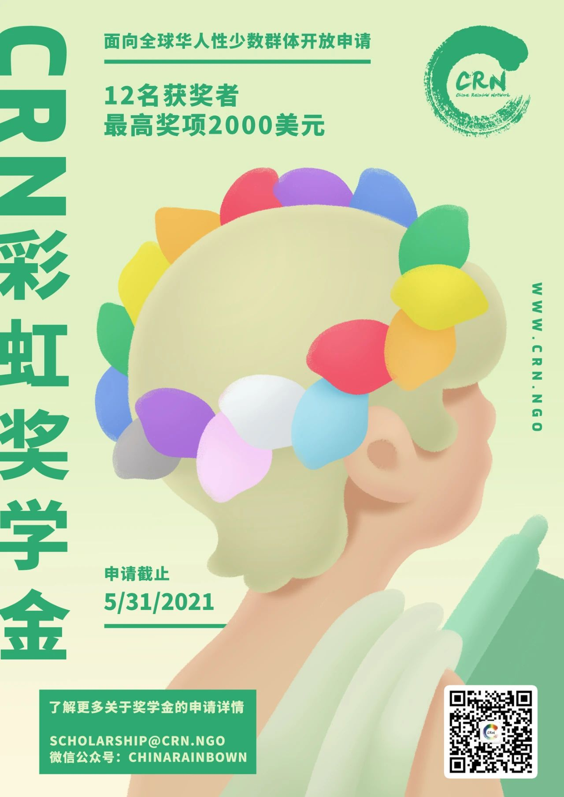
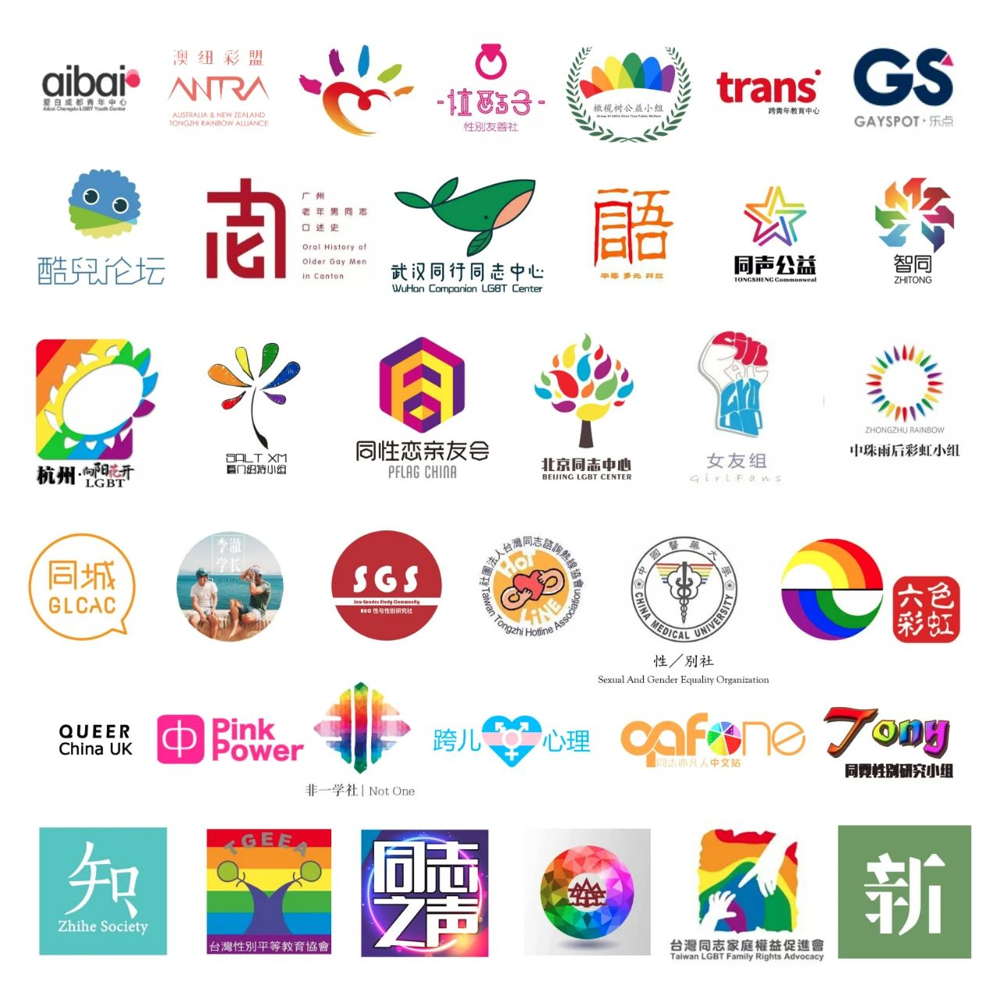

第六届 “CRN 彩虹奖学金” 申请正式开放！

为了最大程度地开放给全球华人性少数学子申请，我们极大地简化了今年的申请流程：你只需要填写一份申请表即可开始申请！您在初审阶段不再需要担心提交推荐信、简历与成绩单。同时今年我们的获奖名额也将增至12名。
无论你是在北美，中国大陆，港澳台，还是全球任何地方求学，“CRN 彩虹奖学金” 诚邀你的申请。欢迎和我们分享你独特的成长经历与求学故事。我们期待着将今年12个奖学金名额颁给坚持不懈的你们。

CRN 彩虹奖学金概况
华人彩虹联盟 Chinese Rainbow Network （CRN）始创于1996年，是海外最大的华人性少数组织，也是美国唯一的专门面向华人 LGBTQ+ 的注册非营利组织。CRN做为一个非营利组织，所有的资金来源都是来自社会和个人的善款，包括CRN奖学金。所有收到的善款全部投入到CRN活动的经费。我们的使命是建设一个更好的华人性少数社群。一直以来，华人 LGBTQ+ 成员因种种因素躲藏在社会的各个角落，独自面对来自社会和家庭的压力。CRN 的初衷就是建立一个全方位多功能的社区平台，让每一个身在异乡的性少数华人都能够有归属感。
基于此夙愿，起始于2016年的 “CRN 彩虹奖学金”意在资助全球具有进取精神和学术能力，且对 LGBTQ+ 身份有一定认知及思考的华人学子。CRN 彩虹奖学金已于2016至2020连续五年成功开展，共计收到超过650人次申请，颁发28人次奖学金。CRN 奖学金的初步成功更加坚定了我们继续向前，传承 CRN 精神的决心。现在，2021年度 CRN 彩虹奖学金申请正式开放，欢迎全球华人 LGBTQ+ 学子申请。

奖学金设置（共12项）
一等奖，一位，$2000美元
二等奖，两位，各$1500美元
三等奖，九位，各$1000美元

奖学金申请
申请人条件
申请人须自我认同为性别认同/性取向为少数的 LGBTQIA+ 的华人学生，其中华人指全球海内外所有自我认同为中华民族的个体；
申请者在2021年9月时需正在或即将攻读本专科及以上学位；
累计 GPA 3.0 及以上（4分制GPA），或均分80分以上，或年级排名前30%，特殊情况可酌情放宽标准。
申请材料（中英文皆可）
由于性少数学子在实际生活中的特殊处境，申请者在准备推荐信等涉及第三方的申请材料时存在一定难处和敏感性。
因此，我们将申请材料的提交分成两步：初选阶段和终选阶段。其中，所有申请者通过提交一份申请表即可完成初选阶段材料的提交。
根据申请表内容评分完成初选评审，并产生进入终选阶段名单。我们会在此时联系进入终选的申请者，再邀请其提交推荐信、成绩单、就读证明等涉及第三方的材料，用于对其申请表内容的印证和补充，进而完成终选的评分，减少未进入终选阶段的申请者因准备材料所面临的麻烦。
其中，申请表除涉及申请者基本信息外，还包含4个方向的问答题：
自我认同：您是谁？您怎样认同自己，以及自己的各种身份认同怎样影响您的生活？您是否认为自己属于某个/某几个社群，并且怎样看待这个/这些社群对您的意义？华人、LGBTQ+、学生等各种身份对您有何意义？您做了哪些事情来塑造您的身份？（1000 字以内）
骄傲：令您感到骄傲的3项个人成就或事迹（750字以内）
成长：让您印象深刻的挫折或挑战，您是如何面对的？这些经历是如何影响您的，您又从这些挫折中学习到了什么？（500 字以内）
目标：您未来一年的目标是什么? 您为何申请CRN彩虹奖学金？CRN彩虹奖学金可以如何帮到您?（300字内）
我们由衷希望您能把这一次的申请经历当作思考您独特身份的契机，愿大家在申请过程中都能有所收获。对您信息的保密是我们的最重要任务，CRN 将对您所有申请信息严格保密！您也可以随时要求撤回您的申请。
奖学金评选标准
展现出一定的学习潜力与成就；
对自身 LGBTQ+ 身份有一定的思考；
展现出对某一领域的坚持与努力；
（任何让你自豪的事情皆可）拥有面对逆境克服困难的勇气与决心；
LGBTQ+ 社群经历或者其他任何社会服务经历也都会是加分项。
申请时间
即日起至2021年5月31日，23时59分
（太平洋时间夏令时）
申请方式
请用以下链接（任选其一）下载申请表格，须把链接复制到浏览器。请注意屏幕大小可能影响链接显示分成两行。链接本身没有分行或分隔。
百度云链接:
https://pan.baidu.com/s/1CVZVd9SqXWit1Degp4Z7SA 提取码:x2kp
Google Drive：
https://drive.google.com/drive/folders/1TTfkqL5sI6MamgPl4Y-WTPoWVhZMd1MK?usp=sharing
申请表格中的填写指南详细地解释了每个申请问题。请您将填写完后的申请表以邮件形式发送至 scholarship@crn.ngo，邮件标题请遵循以下格式：
姓名——在读国家/地区——奖学金申请；
如：张三——马来西亚——奖学金申请
注：为了防止递信失败，我们推荐您使用 Protonmail、Gmail、Yahoo 或 Hotmail 电子邮件服务提交申请。
在您发出申请后的7个工作日内，我们将回复确认邮件；您在申请截至日期前如需更新您的申请表，请直接回复我们的申请确认邮件。
如有任何疑问，欢迎以电子邮件型式垂询scholarship@crn.ngo，请在邮件标题中注明 [申请问题]。我们也将整理所收集到的申请者疑问，定期发布 Q&A 问与答文章或邮件。
奖学金评审
初选
CRN 评审小组将于6月底完成奖学金初选评审工作，推选20名候选人给终审委员会。同时我们也会在7月初开始给遗憾落选的同学发出申请说明信。我们会仔细阅读您的申请材料，并且我们将会与 CRN 支持热线项目合作，给申请者提供建议、反馈的同时也将因人而异向申请者引介申请者感兴趣的资源。
终选
CRN 奖学金终审委员会将于8月初完成奖学金的评选工作，我们将会最大程度的确保终审委员会成员的背景多样性；CRN 将于9月前以电子邮件的形式通知申请者是否获奖，并于9月通过 CRN 网页及各大公众平台公布奖学金评审结果。
颁发
按照往年惯例，CRN 每年9月会在美国举行CRN 年度大趴暨奖学金颁奖晚会，彩虹奖学金获得者将被邀请参加。但是受疫情影响今年线下活动充满不确定性。更多关于颁奖仪式的后续安排，敬请关注奖学金小组的通知。

Q&A
CRN彩虹奖学金组委会将在北京时间, 4月18日, 早上9点组织线上答疑会，会议ZOOM链接: http://meet.crn.ngo/
或者使用ID和密码：
Zoom房间ID：934 7118 2153
Zoom房间密码：5sDdNg
Q: 申请材料必须是英文或者中文吗？
A:本着方便申请人的原则，申请材料中文或者英文都可以。您也可以一部分问题使用中文，另一部分使用英文。
Q：在申请人条件中有提到“须是华人学生”，这是不是表示我在北京上学，不是留学生的话，就不能申请呢？
A：不是这样的。我们这里的”华人“是指全球海内外所有自我认同为中华民族的个体。不管你拿什么样的护照，在地球哪里上学，上海，香港，澳门，台北，多伦多，伦敦，纽约，悉尼，新加坡.............. 都可以申请的呢！
Q：想申请彩虹奖学金，但是还没有对家人同学同事出柜，这样能申请吗？
A：不需要出柜也能申请，只要自我认同为性别认同/性取向为少数的 LGBTQIA+ 的华人学生身份就符合申请条件哦。
Q：申请表格中会需要填写目前在读的学校。中间几年工作了，今年得到录取通知，准备回归校园，但是目前没有在读，这样可以申请吗？
A：当然可以啦！不管您现在有没有在上学，只要您收到录取通知，准备入学，都可以申请CRN彩虹奖学金呢。
Q: 在申请人条件中有提到“有LGBTQ+社区服务经历会是加分项”，是否意味着没有这种经历的申请人就没有机会拿到CRN奖学金？
A：不是这样的。为LGBTQ+社区服务的经历只是CRN在评选奖学金过程中考虑的一个方面。有一些申请人在各方面都很优秀，但是因为各种客观的原因没有机会参与LGBTQ+社区的活动，这类申请人一样可以申请CRN奖学金。只是我们希望你在个人陈述里面谈谈你对LGBTQ+社区的认知和想法，CRN更希望申请人在开启学生生活的过程中也融入到CRN这个代表华人LGBTQ+团体的社区中来。
Q：推荐信可以让不是LGBTQ+社群的小伙伴来写吗？中文还是英文呢？
A: 中英文都可以。不是LGBTQ+小伙伴写的推荐信也是可以的。推荐信的目的是多一个渠道让CRN更好地了解申请人。CRN在评定奖学金时会全面考量申请人的条件，推荐信只是其中的一环。推荐人可以根据被推荐人的背景，从各个不同的角度来推荐申请人，并没有一个特定的标准。
Q：只是在专科学院上学，并不是在大城市名校就读，成绩也算不上是名列前茅，这样可以申请吗？
A：不用担心，作为一个多元的社群，CRN彩虹奖学金评审标准丰富多元，每个申请者都拥有自己的特色。另外往年的获奖者从大陆地区的专科同学到海外名校phd都有哦！
Q: 如果申请者还有问题，可以联系CRN奖学金小组吗？
A: 当然可以，如果申请者有任何关于奖学金的问题，可以通过邮箱scholarship@crn.ngo联系我们，CRN奖学金小组会有专人尽快给予答复。

往年申请者感言
“在我看到奖学金招募时我一直激动到现在。我没有想到在华人社区，一直无法公开讨论的话题,人群，却在海外被这样的形式鼓舞着。说实话，这比任何的彩虹游行都要鼓舞我，因为游行是他们的，在ta们的国家，以ta们的名义，我在人群里，却没有浓烈的归属感。真的感谢这个活动，让我有机会和华人性少数群体有联系，让我能坐下来花一小时回顾我认同自己，找寻自己，接受自己，勇敢说爱的过程。知来路，识归途。感谢所有工作人员和积极参与的伙伴们，希望我们都能始终保持这份赤诚之心，共赴美好景愿。”
“申请CRN彩虹奖学金，其实刚开始的初衷是，希望得到经济上的资助。但是似乎在填写申请资料中，感觉这个行为本身似乎就是很有力量的事情，似乎这里面包含着对自己的认可，对自己本身身份的肯定，以及通过这个行为在某种程度对LGBTQ+的事业也贡献出了属于自己的支持和力量。”
“自从知道这个彩虹奖学金后，深刻的感受到自己并不孤单，我的困惑和彷徨也不是唯一份，让我感受到身后的力量，让我感受到获奖者们的优秀。更加让我感受到自己以后也可以像获奖者们一样帮助后来人的彷徨。”
“首次了解到CRN彩虹奖学金时，我内心那份独特的归属感变得更加温暖，LGBTQ+身份所带来的自我认同在那一刻得到了进一步提升。它不仅代表一份来之不易的荣誉，更彰显了我们社群的团结互助，寄托了社群成员对新生代的期望以及共赴光明未来的美好期许。多年来我坚持进取的初衷，除了使自己能够在传播多元理念时更具声量之外，也包含了被社群认同的追求。因此作为社群的一员，我对这份认可十分渴望，它可以为我的前行提供温暖的光源。”

2020年奖学金
获奖者故事
可点击打开全文：
诚挚感谢
CRN 社群支持基金
2021年 CRN 彩虹奖学金捐助者
John Hu & George Mei
◇ ◇ ◇
宣传合作伙伴
（排名不分先后）

文字 |
编辑 |
图片 |
奖学金小组
社交媒体小组
设计小组
华人彩虹联盟
(CRN)
长按二维码扫描关注
投稿链接：https://crn.lgbt/submit